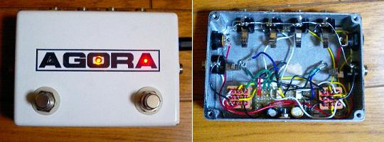

2ループボックス
2007年08月26日 カテゴリー：自作エフェクター（アナログ）

2つのループを切り替えるボックスです。右のフットスイッチがバイパス、左のフットスイッチがループ切り替えです。バイパス時は真ん中のLEDが消灯します。ちなみに左側のLEDは青色です。なぜか3つLEDがあると信号の配色にしたくなってしまいます（英語ではGreenですが）。松美庵さんのページにあった、フォトカプラを使った2ループの配線をしています。更に、ひよこのページのパワーサプライの回路を使って、安定化された電源を供給できるようにしています。配線がすごく面倒でした…